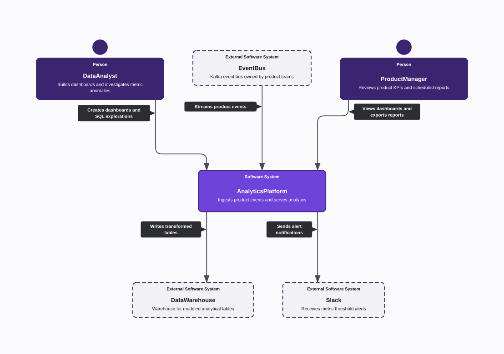
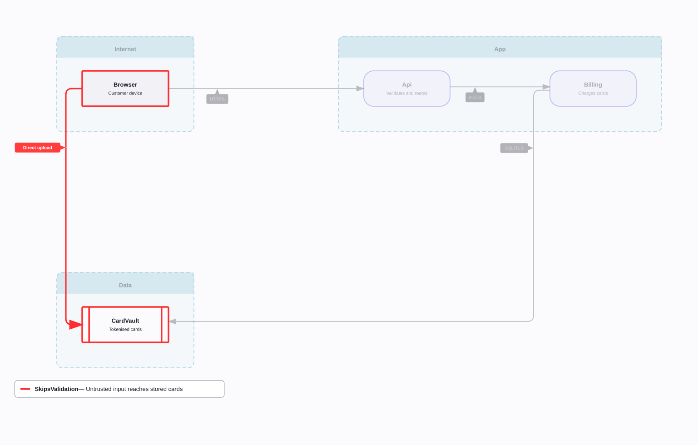
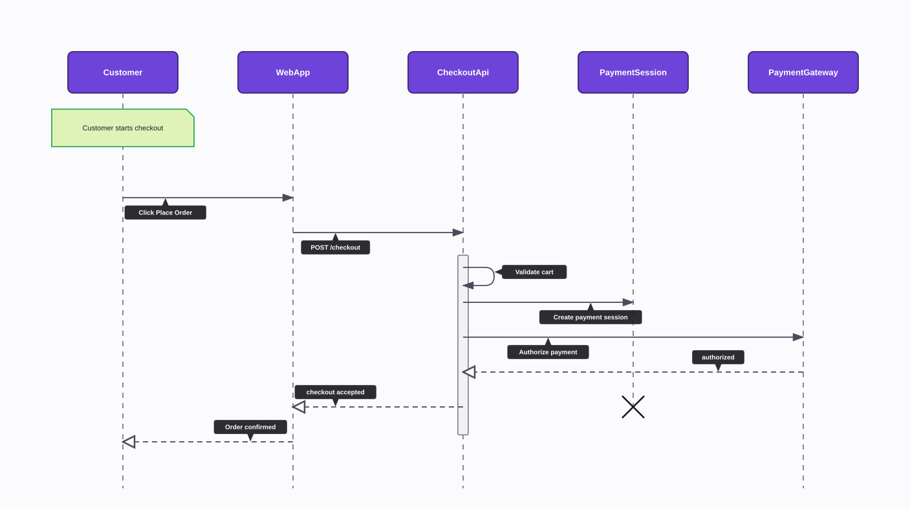

Early preview · Apache-2.0
Collaborate on architecture, not code.
Diagrams as typed YAML .hvis files, validated semantically. The
hypervis CLI checks them, renders SVG or PNG, diffs and queries them,
and gives AI agents the same tools over MCP.


One file in, one diagram out
Each file has one top-level Name[type] key and a list of nodes, edges and directives.
Edit the example and the diagram redraws as you type, right in your browser. Drag the boxes to move them.

Showing the last version that worked. Fix the error below to update it.
The diagram shown is pre-rendered. Live editing needs JavaScript.
The browser checks syntax as you type. hypervis validate also checks the rules for each diagram type.
$ hypervis validate checkout-sequence.hvis
OK: checkout-sequence.hvis (9 nodes, 8 edges)
$ hypervis render checkout-sequence.hvis --format svg -o checkout-sequence.svg
Rendered 8 nodes, 8 edges → checkout-sequence.svgWhat the CLI does
One binary, hypervis, also installed as the short alias hvis.
-
validateParses the file and checks it against the rules for its diagram type, reporting diagnostics.
-
renderLays out and renders the diagram to SVG or PNG.
-
diffCompares two versions of a diagram and shows what changed.
-
scanScans a source directory and generates a class diagram from the code.
-
mcpRuns an MCP server over stdio so AI agents can use the same tools.
Install
With a package manager, which also handles updates:
npx hypervis help # no install
pipx install hypervis
cargo install hypervisOr with the install script, which puts hypervis and hvis in ~/.local/bin:
curl -fsSL https://raw.githubusercontent.com/hypervisual-io/hypervisual/main/install.sh | sh- Prebuilt for macOS arm64 and Linux x86_64/arm64. Binaries are also attached to each GitHub release.
- Validation runs the built-in diagram rules in Python, so
python33.9 or newer must be on yourPATH.
Use it from AI agents
MCP server
hypervis mcp serves validate, render, expand, diff and scan over stdio. These configs only need Node.
Claude Code
claude mcp add hypervisual -- npx -y hypervis mcpCursor (.cursor/mcp.json) or any client using the same format
{
"mcpServers": {
"hypervisual": {
"command": "npx",
"args": ["-y", "hypervis", "mcp"]
}
}
}Agent skills
Installs hypervis-cli (shared workflow and grammar) plus one skill per diagram type, with references and examples.
You can also copy the folders under skills/ into your agent's skills directory.
npx skills add hypervisual-io/hypervisualDiagram types
One grammar, with a vocabulary and rules for each type. Every type has its own agent skill. Click one to try it in the editor above.